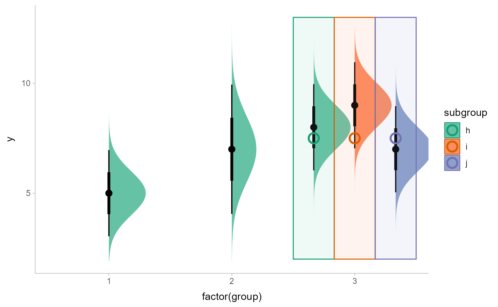
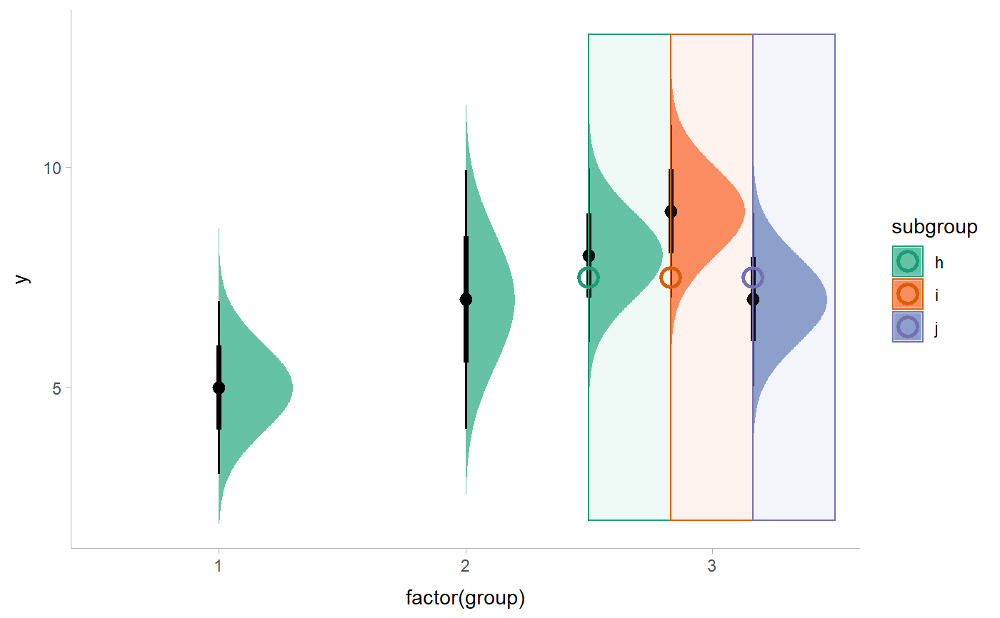

Dodge overlapping objects side-to-side, preserving justification
Source:R/position_dodgejust.R
position_dodgejust.RdA justification-preserving variant of ggplot2::position_dodge() which preserves the
vertical position of a geom while adjusting the horizontal position (or vice
versa when in a horizontal orientation). Unlike ggplot2::position_dodge(),
position_dodgejust() attempts to preserve the "justification" of x
positions relative to the bounds containing them (xmin/xmax) (or y
positions relative to ymin/ymax when in a horizontal orientation). This
makes it useful for dodging annotations to geoms and stats from the
geom_slabinterval() family, which also preserve the justification of their
intervals relative to their slabs when dodging.
Usage
position_dodgejust(
width = NULL,
preserve = c("total", "single"),
justification = NULL
)Arguments
- width
Dodging width, when different to the width of the individual elements. This is useful when you want to align narrow geoms with wider geoms. See the examples.
- preserve
Should dodging preserve the
"total"width of all elements at a position, or the width of a"single"element?- justification
<scalar numeric> Justification of the point position (
x/y) relative to its bounds (xmin/xmaxorymin/ymax), where0indicates bottom/left justification and1indicates top/right justification (depending onorientation). This is only used ifxmin/xmax/ymin/ymaxare not supplied; in that case,justificationwill be used along withwidthto determine the bounds of the object prior to dodging.
Examples
library(dplyr)
library(ggplot2)
library(distributional)
dist_df = tribble(
~group, ~subgroup, ~mean, ~sd,
1, "h", 5, 1,
2, "h", 7, 1.5,
3, "h", 8, 1,
3, "i", 9, 1,
3, "j", 7, 1
)
# An example with normal "dodge" positioning
# Notice how dodge points are placed in the center of their bounding boxes,
# which can cause slabs to be positioned outside their bounds.
dist_df %>%
ggplot(aes(
x = factor(group), ydist = dist_normal(mean, sd),
fill = subgroup
)) +
stat_halfeye(
position = "dodge"
) +
geom_rect(
aes(xmin = group, xmax = group + 1, ymin = 2, ymax = 13, color = subgroup),
position = "dodge",
data = . %>% filter(group == 3),
alpha = 0.1
) +
geom_point(
aes(x = group, y = 7.5, color = subgroup),
position = position_dodge(width = 1),
data = . %>% filter(group == 3),
shape = 1,
size = 4,
stroke = 1.5
) +
scale_fill_brewer(palette = "Set2") +
scale_color_brewer(palette = "Dark2")

# This same example with "dodgejust" positioning. For the points we
# supply a justification parameter to position_dodgejust which mimics the
# justification parameter of stat_halfeye, ensuring that they are
# placed appropriately. On slabinterval family geoms, position_dodgejust()
# will automatically detect the appropriate justification.
dist_df %>%
ggplot(aes(
x = factor(group), ydist = dist_normal(mean, sd),
fill = subgroup
)) +
stat_halfeye(
position = "dodgejust"
) +
geom_rect(
aes(xmin = group, xmax = group + 1, ymin = 2, ymax = 13, color = subgroup),
position = "dodgejust",
data = . %>% filter(group == 3),
alpha = 0.1
) +
geom_point(
aes(x = group, y = 7.5, color = subgroup),
position = position_dodgejust(width = 1, justification = 0),
data = . %>% filter(group == 3),
shape = 1,
size = 4,
stroke = 1.5
) +
scale_fill_brewer(palette = "Set2") +
scale_color_brewer(palette = "Dark2")
